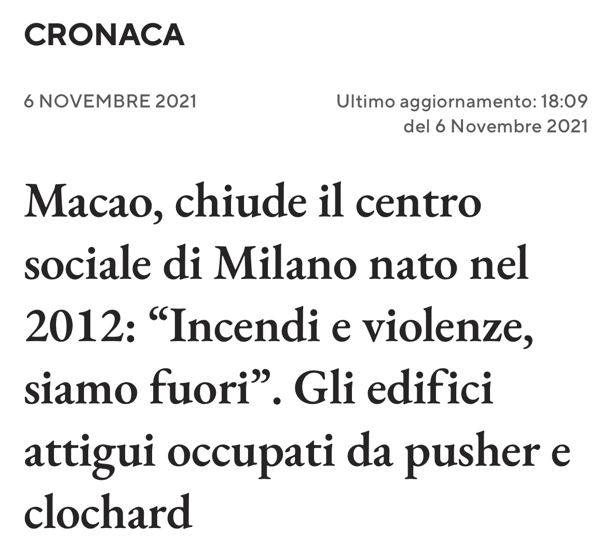
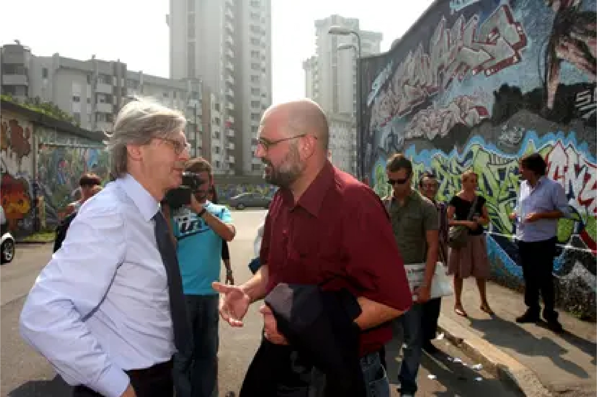
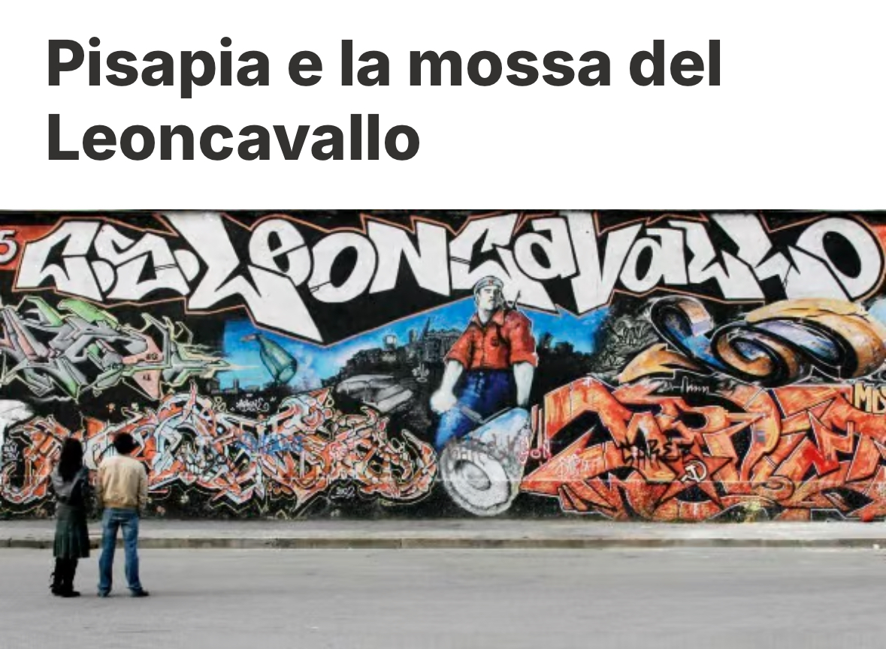
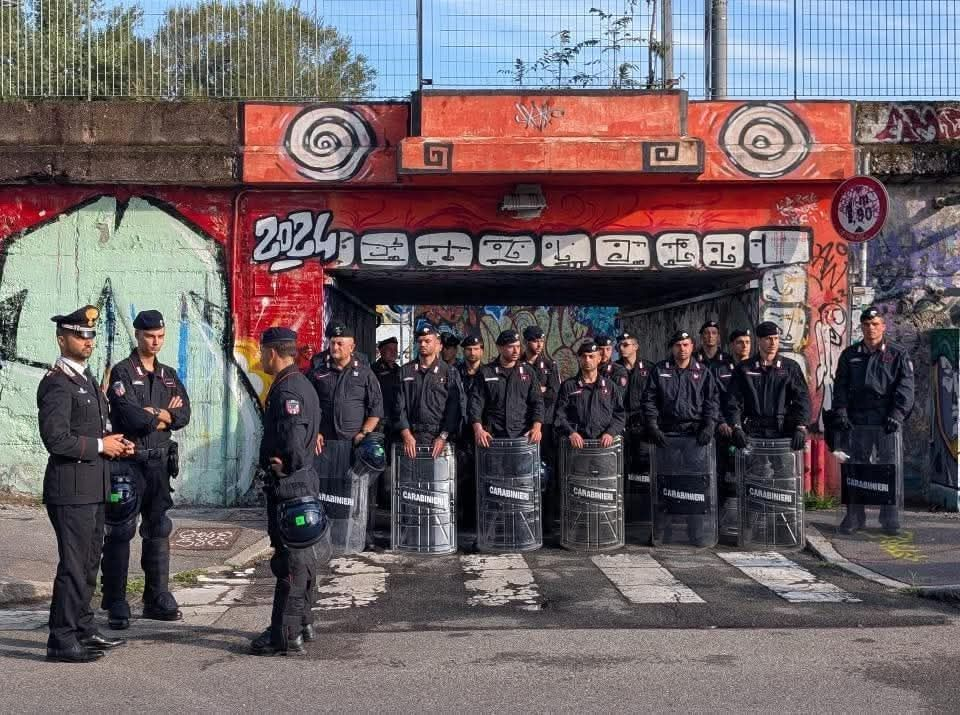
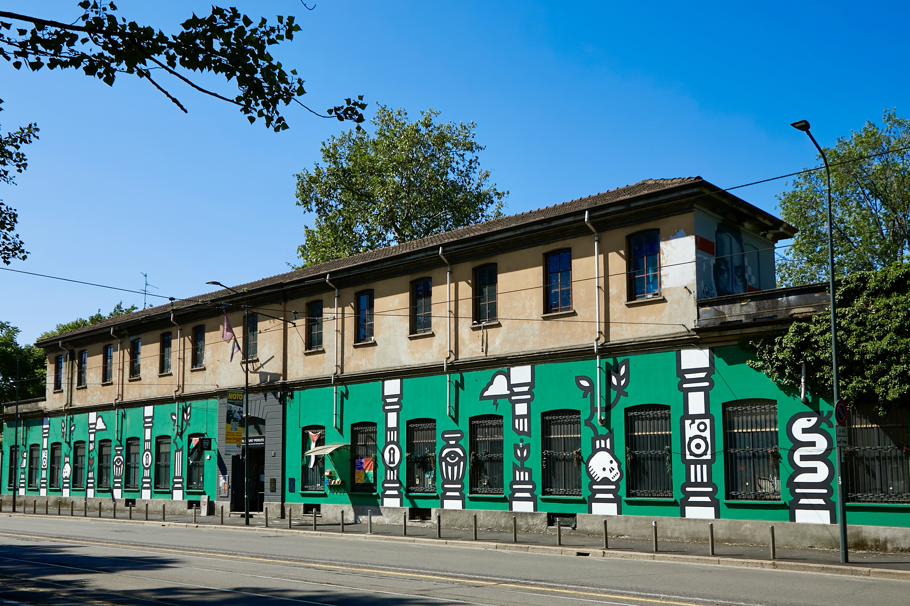
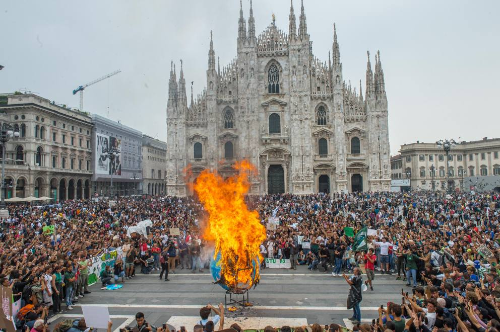

Esiste una narrazione mainstream che continua a rappresentare i centri sociali italiani come uno dei principali luoghi di resistenza politica e culturale del Paese. Una narrazione che, forse, era fondata trent'anni fa, ma che oggi appare sempre più distante dalla realtà. Perché la verità è che i centri sociali italiani, per come erano stati concepiti e costruiti, sono morti. E probabilmente sono morti tra il 2001 e il 2012.
Il G8 di Genova non è stato soltanto uno spartiacque politico per l'Italia. È stato il trauma che ha spezzato definitivamente una generazione di militanti. Dopo quella repressione, dopo l'omicidio di Carlo Giuliani, dopo le torture alla scuola Diaz e nella caserma di Bolzaneto, una parte enorme del movimento ha semplicemente smesso di esistere. Alcuni hanno lasciato la militanza, altri sono "andati a lavorare", altri ancora hanno continuato a resistere nei propri spazi, ma senza più quella forza collettiva che aveva caratterizzato gli anni Ottanta e Novanta.
Sommiamo il fatto che per almeno due decenni i centri sociali sono stati progressivamente delegittimati nel dibattito pubblico. Una parte rilevante della politica e dei media li ha sempre descritti esclusivamente come luoghi di illegalità, degrado, violenza o privilegio, oscurandone sistematicamente le attività culturali, mutualistiche e sociali che avevano caratterizzato molte esperienze storiche. L'effetto è stato evidente. I centri sociali hanno progressivamente perso consenso popolare, hanno smesso di essere percepiti come spazi attraversati da pezzi di città e sono diventati realtà sempre più chiuse, autoreferenziali e incapaci di parlare all'esterno.
Per molti anni i CS erano stati, nel bene e nel male, gli spazi del popolo. Forse i veri eredi della tradizione storica delle Case del Popolo. Vi entravano studenti, operai, artisti, famiglie, curiosi, militanti e persone del quartiere. Erano spazi attraversati dalla società. Quando questo legame si è spezzato, è venuta meno anche la loro principale forza politica. Senza un rapporto vivo con il territorio, molti di questi luoghi hanno finito per sopravvivere soprattutto a se stessi, consumando lentamente l'eredità umana e culturale costruita dalle generazioni precedenti.
Tra il 2001 e il 2012 sopravvive una generazione di reduci.

Persone che continuano a tenere aperti gli spazi sociali con una fatica enorme, spesso senza ricambio generazionale, con sempre meno risorse economiche e con un contesto politico ormai completamente cambiato. È un decennio di resistenza più che di espansione. I centri sociali non crescono più: cercano semplicemente di sopravvivere.
Ed è qui che, secondo me, avviene il punto di non ritorno.
Nascono esperienze nuove che mantengono il linguaggio e l'estetica dei centri sociali, ma ne abbandonano progressivamente molti dei principi fondativi.
A Milano, Macao diventa probabilmente il simbolo più evidente di questa trasformazione. Più che un luogo di militanza organizzata, Macao finisce per rappresentare un nuovo tipo di centralità della produzione creativa, dell'intrattenimento e della vita notturna milanese. Attira il mondo dell'arte contemporanea, della moda e tanti after party, diventando uno degli spazi più frequentati da una generazione che spesso vive l'occupazione più come esperienza ludica e performativa che come pratica politica.
Questo cambiamento modifica profondamente anche il significato stesso di centro sociale. La riduzione del danno lascia spazio a una crescente normalizzazione del consumo di droghe pesanti; l'idea di uno spazio protetto e comunitario si indebolisce; aumentano situazioni di degrado e di insicurezza che molti militanti della generazione precedente avrebbero considerato inaccettabili e incompatibili con la funzione sociale di questi luoghi.
"Sarebbe questo l'esempio di un mondo migliore?"


C'è poi un altro elemento che merita una riflessione. Nonostante quasi un decennio di occupazione, Macao non ha conosciuto un livello di conflittualità giudiziaria paragonabile a quello che aveva caratterizzato quasi tutti i centri sociali degli anni Ottanta e Novanta. Per alcuni questo è il segno di una trasformazione più profonda: uno spazio sempre meno realmente antagonista o conflittuale e sempre più componente, seppure informale, della "Milano da Bere" del giorno d'oggi, mantenendo però l'estetica e i toni gridati da "okkupazione".
I centri sociali storici non erano soltanto luoghi occupati. Erano scuole politiche, comunità, reti di mutuo soccorso, luoghi dove esistevano regole condivise, disciplina interna, responsabilità collettiva. Si potevano condividere o criticare quelle regole, ma esistevano. L'idea stessa di «spazio liberato» implicava che chi lo gestiva si assumesse la responsabilità politica e morale di ciò che accadeva al suo interno. Con Macao, quell'idea sembra essersi persa.
Nel frattempo anche il rapporto con le istituzioni cambia profondamente. Il caso del Leoncavallo è forse il più emblematico. Per decenni è stato raccontato come il simbolo dell'autonomia antagonista italiana. Eppure, osservando la sua storia, emerge un'altra realtà: pochi centri sociali hanno sviluppato un rapporto così continuo con le istituzioni. Dalle interlocuzioni con le amministrazioni comunali fino al fatto che diversi protagonisti della sua storia abbiano poi ricoperto ruoli e cariche importanti nelle istituzioni cittadine e nazionali, il Leoncavallo è diventato progressivamente parte del sistema politico che, almeno teoricamente, avrebbe dovuto contestare.
«Non si tratta necessariamente di un'accusa: per alcuni rappresenta una vittoria politica, per molti altri, invece, è il segno di una completa sottomissione all'establishment.»


Il paradosso è che, anche in questo caso, mentre sui social continuava a essere rappresentata un'immagine di radicalità permanente, nella pratica il Leoncavallo era ormai uno degli spazi più istituzionalizzati dell'intero panorama italiano.
Lo si è visto anche nei momenti più difficili. Quando è arrivato il recente sgombero, non si è assistito a una mobilitazione cittadina e nazionale paragonabile a quelle del passato. L'episodio è stato letto da molti come il simbolo della perdita di capacità organizzativa e di radicamento del movimento. L'affermazione secondo cui molti militanti fossero assenti perché in vacanza è una rappresentazione polemica circolata nel dibattito pubblico, che descrive bene il clima di quei giorni. Resta però il dato politico: uno sgombero che, solo vent'anni fa, avrebbe probabilmente portato a una "rivoluzione", oggi produce una risposta collettiva sterile, performativa e perfettamente compatibile con il mondo dei social network.

Naturalmente queste non sono state le uniche strade possibili. Dalla crisi dei centri sociali sono nati anche progetti che hanno cercato di conservare alcuni principi storici, accettando però che il contesto fosse ormai completamente cambiato.
Forse il caso più rappresentativo è quello del Tempio del Futuro Perduto. Anche il Tempio nasce dentro questa tradizione culturale, ne eredita molti linguaggi e ne condivide l'idea che uno spazio sociale debba produrre cultura, mutualismo, formazione e comunità. Allo stesso tempo, però, compie una scelta diversa: riconosce apertamente che nel XXI secolo uno spazio indipendente non può sopravvivere soltanto attraverso l'«okkupazione», ma deve anche essere capace di produrre cultura, spettacolo e sostenibilità economica, come i modelli europei, senza rinunciare alla propria funzione sociale.

L'obiettivo non è trasformare l'arte in un prodotto commerciale, ma utilizzare gli strumenti dell'organizzazione culturale per finanziare attività che il mercato, da solo, non sosterrebbe mai: scuole gratuite e accessibili, progetti sociali, attività educative, percorsi artistici, spazi di aggregazione e interventi di mutuo aiuto. In questa prospettiva, la musica e gli eventi non rappresentano il fine del progetto, ma il mezzo che rende possibile tutto il resto.
La differenza non riguarda soltanto il modello economico, ma anche la responsabilità verso chi attraversa questi spazi. Se un centro sociale rivendica di essere una comunità, deve assumersi anche il compito di renderla il più possibile sicura, accessibile e sostenibile. La libertà non può essere separata dalla responsabilità collettiva. Forse il problema non è che i centri sociali siano finiti. Il problema è che molti hanno continuato a raccontarsi con il linguaggio del Novecento mentre il mondo era già cambiato. Altri, invece, hanno provato a ridefinire quella tradizione, mantenendone lo spirito, ma modificandone gli strumenti pratici e l'estetica.
E quindi? Forse è cambiato tutto — ma non tutto è perduto.
I social network hanno modificato profondamente il modo di fare politica. La militanza è diventata sempre più una costruzione identitaria individuale, una comunicazione permanente, una rappresentazione pubblica di sé. L'attivismo si misura spesso attraverso i contenuti pubblicati, il linguaggio utilizzato, la posizione assunta online. La dimensione performativa ha progressivamente sostituito quella organizzativa.

Nel frattempo anche le grandi appartenenze collettive si sono dissolte. Sindacati, partiti, collettivi, associazioni e centri sociali non sono più i luoghi dove le persone costruiscono la propria identità politica. Quell'identità viene costruita individualmente, attraverso gli algoritmi, le piattaforme digitali e comunità sempre più orientate all'estetica.
In questo scenario, forse, i centri sociali non sono stati semplicemente sconfitti. Hanno perso il terreno culturale sul quale erano nati. Erano strumenti pensati per un mondo analogico, fondato sulla presenza fisica, sulla comunità territoriale, sulla militanza quotidiana. Oggi quel mondo non esiste più.
E forse è proprio questa la domanda che bisognerebbe avere il coraggio di porsi: ha ancora senso tentare di ricostruire i centri sociali del Novecento, oppure sarebbe più utile immaginare nuove forme di organizzazione collettiva, capaci di rispondere ai conflitti e ai bisogni del XXI secolo?
Continuare a raccontare che i centri sociali italiani siano ancora il cuore della controcultura rischia di impedire questa riflessione. Perché, prima di costruire qualcosa di nuovo, bisogna avere il coraggio di riconoscere quando un'esperienza storica è arrivata alla sua conclusione. Si chiama onestà intellettuale.
Forse i centri sociali italiani non stanno morendo.
Forse sono morti da molto tempo.
E quasi nessuno ha avuto il coraggio di dirlo.
Sì, ma cosa succede nel 2026?
Naturalmente ogni generalizzazione lascia fuori esperienze importanti. Ancora oggi esistono realtà che, pur tra enormi difficoltà, continuano a presidiare il territorio, a produrre cultura, mutualismo e organizzazione politica quotidiana.
A Milano, il Cantiere continua a rappresentare uno dei più autorevoli laboratori di movimento su scala nazionale e cittadina, capace di intrecciare diritto all'abitare, mobilitazioni studentesche, cultura indipendente e organizzazione politica.
SMS – Spazio di Mutuo Soccorso ha costruito negli anni un modello concreto di mutualismo, con sportelli sociali, attività popolari e un profondo radicamento territoriale.
Il Lambretta continua a dimostrare che è ancora possibile costruire comunità attraverso l'autogestione, mentre COX18, con la sua lunga storia, resta uno dei simboli più importanti dell'autonomia culturale italiana e della capacità di far convivere editoria indipendente, arti, musica e pensiero critico.
A Roma, Spin Time Labs è riuscito a trasformare un'enorme occupazione abitativa in un laboratorio permanente di solidarietà, produzione culturale e servizi per la città, dimostrando come il diritto alla casa possa convivere con un'intensa attività artistica e sociale.
A Napoli, Officina 99 continua a essere un punto di riferimento storico per l'antagonismo cittadino e nazionale, mentre l'Ex OPG – Je so' Pazzo ha saputo rinnovare il concetto stesso di centro sociale, costruendo una delle esperienze di mutualismo più articolate d'Italia attraverso ambulatori popolari, sportelli sociali, attività educative e iniziative culturali.
A Firenze, il CPA Firenze Sud rappresenta uno degli esempi più longevi di autogestione ancora esistenti, capace di mantenere negli anni una forte identità politica senza rinunciare al radicamento nel territorio.
A Torino, il collettivo di Askatasuna, pur dopo la perdita dello spazio storico, continua a rappresentare un punto di riferimento per una parte significativa dei movimenti sociali cittadini, dimostrando che una comunità politica concreta può sopravvivere anche quando perde il luogo fisico che l'ha fatta nascere.
Proprio perché queste esperienze esistono, è importante distinguerle.
La riflessione contenuta in questo articolo non sostiene che ogni centro sociale abbia rinunciato alla propria funzione. Sostiene qualcosa di diverso: che il movimento dei centri sociali, come grande fenomeno culturale e politico capace di parlare a un'intera generazione, abbia ormai concluso il proprio ciclo storico.
Realtà come queste dimostrano che quello spirito può ancora esistere, quando riesce a rimanere radicato nei territori, utile alle persone e capace di costruire comunità reali. Oggi, però, rappresentano l'eccezione, non più la regola.